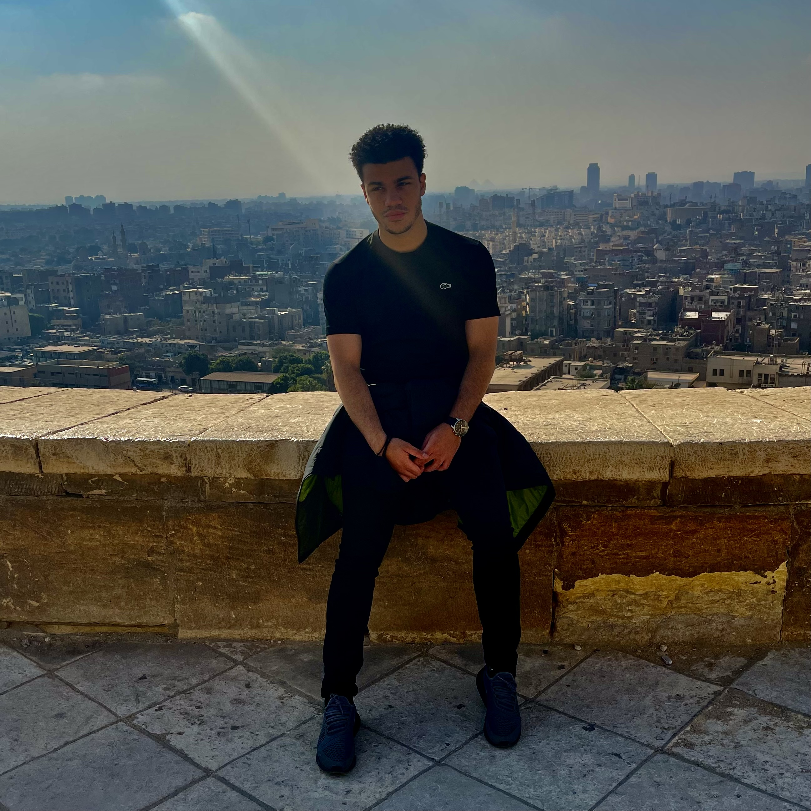

Personal Biography
A quick look into my background, leadership journey, and what drives my engineering perspective.

Fathy Abdelshahid
Software Consultant @ Capgemini • Monash Software Engineering (Honours)I bridge technical engineering with real-world communication. Whether translating complex client requirements into scalable platforms or tracking down root causes across distributed codebases, I bring resilience, curiosity, and high accountability to every team I join.
Adaptability & Perspective
Born and raised in Cairo before moving to Australia at age 12, adapting to new cultures and systems became second nature early on. Navigating unfamiliar environments shaped my open-minded problem-solving approach and ability to communicate effortlessly across diverse teams.
Leadership & Teamwork
From serving as High School Captain to coaching youth football squads at Avondale FC, leadership for me is about staying calm under pressure, mentoring others, and keeping teams aligned toward shared outcomes when stakes are high.
Pragmatic Engineering
Holding a Bachelor of Software Engineering (Honours) from Monash, I focus on clean code, automated pipelines, and maintainable systems. I believe that software should remove friction for stakeholders rather than create technical debt.